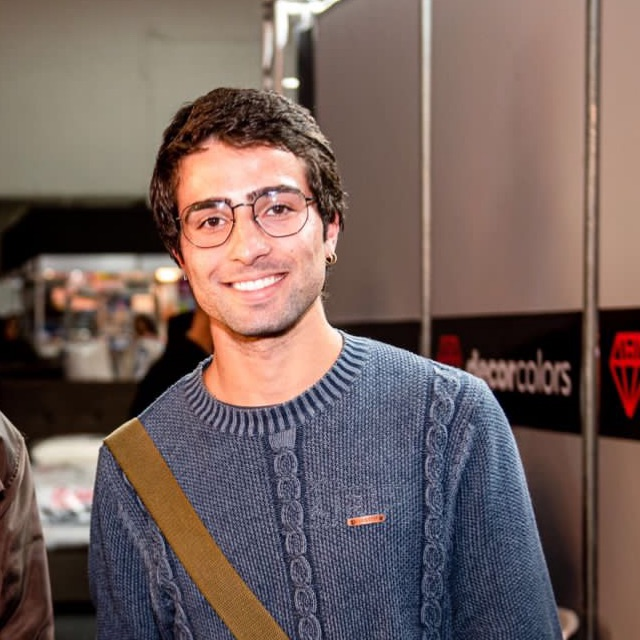

Lucas Gomes
Lucas é apaixonado por guitarras e amplificadores. Sua especialidade é ajudar músicos a encontrar o timbre perfeito, seja em equipamentos clássicos ou nas mais modernas tecnologias de áudio. Se você está procurando uma guitarra com alma, Lucas é o cara certo.
🎸 Tem uma amizade com os integrantes U2
🔊 Já vendeu equipamentos para equipe de
Travis Scott, brabo hein?!!

Eric Duarte
Eric é o guru dos teclados e sintetizadores. Sempre antenado nas últimas tendências, ele conhece todos os truques para tirar sons incríveis dos instrumentos mais sofisticados. Se precisa de um conselho sobre teclas, Eric tem as respostas.
🎹 Mestre dos teclados, escuta muita música clássica
⚡ Eric curte muito fazer remixagens, juntando rock e música clássica!! Visionário

Guilherme Senna
Gui é um baterista de coração e conhece tudo sobre baterias acústicas e eletrônicas. Desde afinação até escolha de baquetas, Gui ajuda você a encontrar o ritmo perfeito para o seu som. Sua energia é contagiante!
🥁 Já fundou banda de garagem com colegas na adolescência
🎶 Mestre em ritmo e groove

Athirson
Athirson é o mestre dos pedais de efeito e interfaces de áudio. Ele adora ajudar guitarristas e produtores a criar texturas sonoras únicas, explorando ao máximo as possibilidades dos equipamentos. Se você busca um som inovador, Athirson tem o que você precisa.
🎛️ Trabalha em TI também, curte muito tecnologias
🎧 Habilidade em criações audiovisuais, juntando um bom som e interfaces iradas!!

Victor Hugo
Victor Hugo é o especialista em áudio profissional e gravação. Seja para montar um estúdio caseiro ou equipar uma grande sala de gravação, ele entende tudo sobre mesas de som, microfones e monitores. Seu conhecimento técnico garante o som perfeito.
🎙️ Fã demais de grunge e MPB
🎚️ Curte muito idealizar e projetar cenários e videoclipes!! WoW

Milton
Milton é a referência em baixos elétricos e amplificadores. Com anos de experiência como baixista, ele sabe como encontrar aquele grave marcante que faz toda a diferença em uma banda. Milton vai te ajudar a achar o groove certo.
🎸 Já teve contato direto com bandas nacionais de MPB, inclusive substituindo um baixista em uma turnê
🎵 Conhecedor de graves poderosos e já vendeu um contrabaixo para o famoso Lemmy Kilmister! Baita história!!